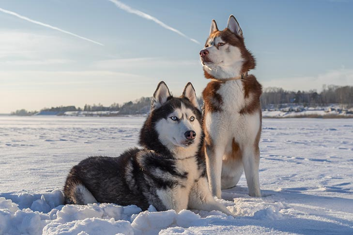

About Us

Brad and Staci are professional dog breeders for Alaskan dog breeds such as Alaskan Malamutes, Siberian Huskies, and Alaskan Huskies
Alaskan dogs
About the Alaskan Malamute
The Alaskan Malamute stands 23 to 25 inches at the shoulder and weighs 75 to 85 pounds.
Everything about Mals suggests their origin as an arctic sled dog: The heavy bone, deep chest,
powerful shoulders, and dense, weatherproof coat all scream, “I work hard for a living!”
But their almond-shaped brown eyes have an affectionate sparkle, suggesting Mals enjoy snuggling with their humans when the workday is done.
Mals are pack animals. And in your family “pack,” the leader must be you. If a Mal doesn’t respect you, he will wind up owning you instead of the other way around.
Firm but loving training should begin in early puppyhood. That said, a well-behaved Mal is a joy to be with—playful, gentle, friendly, and great with kids.
About the Siberian Husky

The graceful, medium-sized Siberian Husky’s almond-shaped eyes can be either brown or blue—and sometimes one of each—and convey
a keen but amiable and even mischievous expression. Quick and nimble-footed, Siberians are known for their powerful but seemingly
effortless gait. Tipping the scales at no more than 60 pounds, they are noticeably smaller and lighter than their burly cousin,
the Alaskan Malamute. In fact, breeders and fanciers prefer the moniker Siberians over huskies, as the latter suggests a bigger,
brawnier dog than what is the standard for the breed.
As born pack dogs, Siberians enjoy family life and get on well with other dogs; their innate friendliness render them indifferent watchdogs.
This breed is also energetic and can’t resist chasing small animals, so secure running room is a must. An attractive feature of the breed:
Siberians are naturally clean, with little doggy odor.
About the Alaskan Huskies
These dogs are the ultimate racing machines, the modern Iditarod dog of choice. They’re bred specifically for all the qualities sought in a
top canine athlete. A team of researchers studied the genetic lineage of these popular racers and found their ancestry combines qualities of strength,
speed, agility and endurance.
Alaskan huskies are descended from breeds including Alaskan malamutes, Siberian huskies, German shorthaired pointers,
Salukis and Anatolian shepherds. Some Alaskan husky racers are even bred with wolves. As such, the Alaskan huskies are not
recognized by the American Kennel Club as a distinctive breed – but they are largely preferred by Iditarod mushers as the dog most
likely to get them across the finish line first.